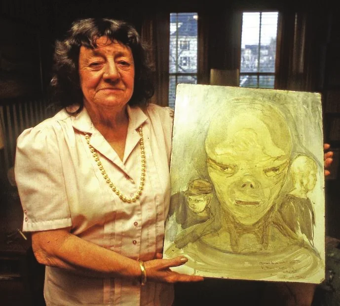

Betty et Barney Hill ont affirmé avoir été emmenés à bord d'une soucoupe volante où des entités extraterrestres leur ont fait subir des sortes d'examens médicaux. L'histoire est trop connue pour être répétée ici. Cet article tente d'examiner la crédibilité des témoins et les facteurs qui ont fait de ce cas un enlèvement par des extraterrestres « classique ».
On a beaucoup spéculé sur le stress que subissaient les Hill à l'époque. Ils formaient un couple mixte à une époque où de telles relations étaient mal vues. Barney s'inquiétait pour ses enfants nés d'un précédent mariage, et son emploi de postier l'obligeait à de nombreux trajets. Betty était assistante sociale et tous deux militaient activement pour les droits civiques. Ils étaient partis sur un coup de tête pour ce voyage fatidique sans emporter beaucoup d'argent, et rentraient de nuit pour éviter le mauvais temps.
Tout au long de son témoignage, Barney montre des signes évidents de se sentir traqué et, la nuit même de leur rencontre, il craint de croiser des gens. Autre signe de son état d'esprit, il cache une arme de poing dans sa voiture au cas où il y aurait des ennuis.
L'ufologue Peter Rogerson note que même la description par Barney de l'ovni qu'il a vu aux jumelles indiquait qu'il était dans un état traumatisé :
Quiconque lit la rencontre de Barney avec la lumière (dans le ciel, N.W.) dans le champ ne peut que soupçonner que sa réaction extrême était plus probablement le symptôme d'un stress post-traumatique préexistant que quelque chose de nouveau. Sa description de l'extraterrestre, avec un visage de type mongol, portant une sorte de blouson de cuir et une écharpe, rappelle curieusement un pilote kamikaze. Cette figure est aussi vue comme un officier nazi maléfique et comme un Irlandais (les Irlandais de Boston, traditionnellement hostiles aux Noirs). En d'autres termes, reflétées dans la lumière inconnue, Barney voit des images d'autorité maléfique, d'intolérance et de menace. Rogerson, Peter: Fairyland’s Hunters: Notes Towards a Revisionist History of Abductions. Part Two.
À ce stade, nous pourrions simplement rejeter leurs souvenirs d'enlèvement comme un fantasme déclenché par Jupiter, le phare de la tour d'observation du mont Cannon ou d'autres sources de lumière tout aussi banales. Pourtant, il y a plusieurs autres éléments de preuve à l'appui que nous devons examiner.
La fiche de rapport 10073 du projet Blue Book indique que la station radar d'alerte avancée de North Concord, dans le Vermont, a détecté un objet lent au mouvement erratique, à haute altitude, le . C'était 6 ou 7 heures avant l'observation d'ovni des Hill, et à seulement 33 milles du lieu de leur observation. Il a été observé pendant 18 minutes. De ces données, on a conclu qu'il s'agissait peut-être d'un ballon-sonde. Un ajout à la fiche indique :
Au cours d'une conversation informelle le entre le commandant Gardiner B. Reynolds, 100th B S DC01, et le capitaine Robert O. Daughaday, commandant du 1917-2 AACS DIT, base aérienne de Pease, New Hampshire, il est apparu qu'un étrange incident s'était produit le , heure locale. On n'y a attaché aucune importance à l'époque.
Le rapport quotidien de la base indique qu'il a été détecté sur son radar d'approche de précision à une distance de 4 milles, qu'il a remonté à un demi-mille, puis qu'on n'a plus vu qu'une cible faible effectuant une approche basse. Aucun avion n'a été vu visuellement, et le verdict officiel a été qu'il était dû à une inversion de température ou à des causes naturelles similaires Radar Reports Prior to Hill Case.
Après leur rencontre, ils ont trouvé sur le coffre de la voiture six taches brillantes étranges, de la taille d'un dollar. Betty pensait qu'elles pouvaient être radioactives, et elle a donc passé une boussole au-dessus. L'aiguille de la boussole s'est agitée de façon erratique quand Betty a fait ce test, mais quand Barney a essayé, l'aiguille s'est comportée normalement. Que ces taches aient été radioactives ou non, on a supposé qu'elles s'étaient formées au moment où ils ont entendu les étranges bips qui semblaient venir du coffre de leur voiture.
Karl Pflock donne une explication plus banale : il note qu'en rentrant chez eux, les Hill ont trouvé le couvercle du coffre mal fermé. Cela a pu se produire juste avant la première rencontre rapprochée de Barney avec l'ovni, quand il a sorti une arme de poing du coffre de la voiture. Dans son état de panique, il a très bien pu laisser le couvercle non verrouillé, provoquant ainsi les bruits étranges quand la voiture a démarré en trombe Plock, Karl[Note de RR0] Coquille pour Pflock, Karl.: ‘Beep-Beep!’ Went The Saucer?, Saucer Smear, Volume 47, No. 10, .
Après la rencontre, on a trouvé le dessus des bouts de chaussures de Barney éraflé. Cela corroborerait sa déclaration selon laquelle il avait été traîné par les bras vers l'ovni posé quand il a été enlevé.
On a trouvé la robe que Betty portait pendant l'enlèvement couverte d'une poudre rose. Une fois secouée, celle-ci a laissé des taches roses. Betty a aussi trouvé l'ourlet et les coutures déchirés. La robe violette à motifs a été conservée dans son placard et, au fil des années, elle en a découpé des morceaux pour satisfaire les demandes de laboratoires du monde entier Betty Hill - The Grandmother of Ufology, entretien réalisé par Avis Ruffu en . Jusqu'à présent, personne n'a apporté la moindre preuve qu'elle soit d'origine exceptionnelle, et encore moins extraterrestre.
Plus étrange encore, Betty a affirmé que six à huit semaines après leur rencontre, ils sont rentrés chez eux pour trouver un tas de feuilles sur la table de leur cuisine. Ils venaient de retourner dans les montagnes chercher le lieu de leur rencontre pour voir si cela réveillerait des souvenirs. En nettoyant, elle a trouvé les boucles d'oreilles bleues qu'elle portait la nuit de la rencontre. Elle s'est demandé, fort raisonnablement, comment elle les avait perdues et comment elles étaient arrivées chez eux. Ce que cela lui indiquait, c'est que les extraterrestres lui avaient volé ses boucles d'oreilles et qu'ils savaient où ils habitaient Interview with Betty Hill. Held at her Home in Portsmouth, New Hampshire, le , par Peter Huston.
L'élément de preuve le plus fort à l'appui de leurs affirmations était la fameuse carte stellaire. En collaboration avec Betty, l'astronome amateur Marjorie Fish a créé une maquette en trois dimensions du système d'étoiles correspondant à la carte stellaire vue à bord de la soucoupe volante. Celle-ci semblait indiquer que les extraterrestres venaient du système d'étoile double de Zeta Reticuli. Les sceptiques ont soutenu de façon convaincante que la carte stellaire de Betty se compose de points et de lignes vagues qui pourraient correspondre à toute une série de systèmes stellaires. De fait, il y a eu au moins 6 autres tentatives de faire correspondre la patrie des extraterrestres à d'autres systèmes stellaires, voire à notre propre Système solaire, qui sont aussi (in)crédibles que Zeta Reticuli.
En fin de compte, la principale preuve de cet enlèvement est le témoignage des Hill, issu d'une combinaison de cauchemars et de récits obtenus sous régression hypnotique. Ils ont fait l'impression de personnes sincères et véridiques à tous ceux qui les ont interrogés et rencontrés. Cette impression a toutefois été minée par les nombreuses affirmations ultérieures de Betty sur des événements psychiques et des observations de centaines d'ovnis, dont beaucoup pouvaient facilement s'expliquer.
Betty Hill est morte d'un cancer du poumon à son domicile de Portsmouth le . Elle a été
pleurée par la communauté ovni comme une véritable pionnière. Quelqu'un est allé jusqu'à dire qu'elle était
l'équivalent ufologique de Lindberg[Note de RR0] Sans doute l'aviateur Charles Lindbergh..
D'autres avaient des doutes sur sa crédibilité. Bryan Daum, alors jeune officier copilote affecté à la base aérienne de Pease, se souvenait l'avoir rencontrée deux fois à la
fin des années . La première fois, c'était à la bibliothèque de la base, où
elle donnait une conférence sur des observations dans la région. Environ un an plus tard, il a vu un ovni en forme
de boîte et a décidé de rendre visite à Betty pour voir si elle savait si quelqu'un d'autre avait vu une telle chose.
Le recevant dans son jardin, elle lui a confirmé de telles observations et a ajouté qu'ils battaient parfois des
ailes. Son air égaré lui a fait penser qu'elle était vraiment folle et (je) suis vite remonté dans ma voiture et
reparti
Daum, Bryan: Betty Hill Credible?, UFO UpDates Mailing List, .
Le sceptique Robert Shaeffer n'était pas davantage convaincu par Betty :
J'étais présent à la National UFO Conference de New York en , où Betty a présenté certaines des photos d'ovnis qu'elle avait prises. Elle a montré ce qui devait représenter bien plus de deux cents diapositives, pour la plupart des points, des flous et des taches sur fond sombre. Il s'agissait censément d'ovnis qui s'approchaient, poursuivaient sa voiture, atterrissaient, etc. Après que son exposé eut dépassé environ deux fois le temps qui lui était imparti, Betty a été littéralement chassée de la scène sous les huées d'un public qui lui était au départ très favorable. Cet incident, auquel ont assisté de nombreux dirigeants et militants de premier plan de l'ufologie, a levé tout doute qui pouvait subsister sur la crédibilité de Betty : elle n'en avait aucune. Selon les mots souvent répétés d'un ufologue qui avait accompagné Betty lors d'une veille d'ovnis en , elle était
incapable de distinguer un ovni posé d'un lampadaire.Sheaffer, Robert: Over the Hill on UFO Abductions, p. 3
La rencontre comporte aussi plusieurs éléments fantasmatiques ou folkloriques. Comme les visiteurs de l'autre monde des fées, Betty n'a pas le droit d'emporter un souvenir comme preuve physique de son expérience. Et le Kalendrier des bergiers, un calendrier français du XVe siècle, montre des démons torturant des gens en leur enfonçant de longues aiguilles dans le ventre, ce qui témoigne d'une peur primitive née bien avant que les soucoupes volantes ne prennent leur envol.
Leur récit d'enlèvement comporte plusieurs incohérences. Ils manifestaient une anxiété extrême en racontant
l'incident, et pourtant Betty a dit à l'extraterrestre « chef » en quittant le vaisseau spatial : C'est
l'expérience la plus merveilleuse de ma vie. J'espère que vous reviendrez. J'ai beaucoup d'amis qui adoreraient
vous rencontrer.
Interview with Betty Hill. Held at her Home in Portsmouth, New Hampshire, le , par Peter Huston
D'autres incohérences apparaissent dans la description des extraterrestres. Betty les a d'abord décrits avec un nez à la Jimmy Durante, mais ce trait a disparu des souvenirs ultérieurs. Barney a dit qu'ils communiquaient par une forme de télépathie, alors que les extraterrestres de Betty lui parlaient en anglais. Les extraterrestres semblaient aussi avoir des domaines choisis de connaissance et d'ignorance. Par exemple, ils étaient intrigués par le dentier de Barney, alors qu'ils avaient par ailleurs une bonne connaissance de l'anatomie humaine.
On a aussi affirmé que les Hill connaissaient peu les ovnis ou la science-fiction, et pourtant le site web The Immanuel Velikovsky Archive contient la copie d'une lettre de Betty datée du , adressée au Dr Velikovsky, qui commence ainsi :
Depuis , je pensais qu'un jour je vous écrirais, car c'est à cette époque que j'ai découvert votre Worlds in Collision. À cette première lecture, mon expérience émotionnelle a été celle d'un choc, mais j'ai rapidement accepté vos théories, car elles répondaient à bon nombre de mes propres questions : si l'homme existe depuis tant d'âges, où a-t-il été et qu'a-t-il fait ? Ces théories m'ont aidée à résoudre cette énigme. https://www.varchive.org/cor/various/680309hillv.htm
Le livre affirme qu'au XVe siècle av. J.-C., Vénus a été arrachée à Jupiter et qu'en passant près de la Terre, elle a causé de nombreuses catastrophes consignées par les mythologies et les religions du monde entier. Sa thèse a intrigué le public, qui a fait du livre un best-seller, mais les scientifiques l'ont jugée peu convaincante. James Fitton, qui préparait sa thèse d'histoire romaine à l'université McMaster au début des années , a écrit que :
L'usage que fait Velikovsky de la mythologie est défaillant sur au moins trois points importants. Le premier est sa propension à traiter tous les mythes comme ayant une valeur indépendante ; le deuxième est sa tendance à ne traiter que les éléments compatibles avec sa thèse ; et le troisième est sa méthode très peu systématique. The Lost Critique
Cela montre que Betty portait plus qu'un intérêt passager aux sujets spatiaux et à ce que l'on a fini par appeler les théories des anciens extraterrestres.
Barney avait une conscience aiguë de son origine raciale, et il est significatif qu'il ait cru voir un extraterrestre nazi maléfique le regarder quand il a d'abord observé l'ovni aux jumelles. Sur ces bases minces, certains en sont venus à spéculer que cela prouvait que leur rencontre avait eu lieu avec un engin construit dans le cadre d'une alliance entre la CIA, les nazis et les extraterrestres.
‘Betty, dans ses rêves, devient l'héroïne qui tient tête aux méchants gris, qui leur fait la leçon (après tout,
c'est une Barrett du New Hampshire). Ces rêves ne soulignent-ils pas qui
porte la culotte et qui a des couilles dans cette famille ?[Note de RR0] Le guillemet ouvrant de
ce paragraphe n'est jamais fermé. Le paragraphe est lui-même une citation de l'article de Peter Rogerson cité après le paragraphe suivant, où il commence par To rub it in,
(« Pour enfoncer le clou ») et où on lit emphasises
.
De quoi Barney a-t-il peur, et à quoi Betty Barrett du New Hampshire peut-elle tenir tête ? Regardez les images des extraterrestres avec leurs casquettes, leurs vestes et leurs pantalons, souvenez-vous de ces cartes et de cet équipage mutin. Les cartes ne servent pas à grand-chose dans des vaisseaux spatiaux sautant d'étoile en étoile par des trous de ver, grâce à la distorsion de l'espace ou au processus Z qu'aucun esprit humain ne pourrait jamais comprendre. Ce sont des images de navires et de la mer. Ce sont des marins. Quel genre de marins enlève des gens ? Les négriers, bien sûr. Nous sommes tous passés à côté parce que nous ne sommes pas noirs. C'est la peur centrale qui étreint Barney : les terribles autres, qui sont à la fois nous et pas nous, vont le ramener en esclavage. Betty vient de la culture blanche dominante, elle ne peut pas ressentir la peur d'être réduite de nouveau en esclavage. Elle peut tenir tête à l'équipage. Dans sa vision, les marins ressemblent plutôt à un équipage de pirates désordonné. Rogerson, Peter: Encounters at Indian Head
Dans une lettre au sceptique Philip J. Klass datée du , le Dr Simon affirme qu'il s'agissait davantage d'un cas de « double amnésie » et de « paranoïa raciale » que d'un enlèvement par des extraterrestres :
Jusqu'à ce que (John Fuller) mette la main dessus, cela restait en friche comme le compte rendu d'une étude médicale réussie d'une situation de double amnésie. Mon intérêt pour les ovnis portait presque entièrement sur les phénomènes de paranoïa raciale qui se développaient chez Barney Hill, qui m'ont semblé en être la meilleure représentation que j'aie vue. L'effet final sur d'autres événements, comme une probable expérience d'ovni, n'a servi qu'à amplifier la situation, et non à produire une explication des ovnis ou de phénomènes similaires. Betty and Barney Hill Scanned Documents, p. 8

Une explication des souvenirs éprouvants de Barney sous régression hypnotique est qu'il aurait été influencé par un réveil peropératoire (accidental awareness), qui survient sous anesthésie générale. Barney avait subi une amygdalectomie, et peut-être le traumatisme de celle-ci a-t-il provoqué un retour en arrière vers cet événement sous hypnose ? Anne Skomorowsky, professeure adjointe de psychiatrie à l'université Columbia, note que :
Il avait froid. Ses yeux étaient fermés. Il ne voulait pas être opéré. Puis il s'est réveillé sous anesthésie générale, dans une terreur absolue, entouré d'êtres déformés, plissant les yeux dans la lumière bleue du bloc opératoire. Peut-être la douleur et l'horreur de ce réveil ont-elles submergé son esprit, ou peut-être étaient-ce les anesthésiques, mais d'une façon ou d'une autre l'expérience a disparu de sa mémoire de travail, jusqu'à ce que lui et Betty en viennent à croire qu'ils avaient croisé un objet volant non identifié sur une route sombre et solitaire du New Hampshire. Skomorowsky, Anne: Alien Abduction or ‘Accidental Awareness’?, Scientific American
Barney, sous hypnose, confirme qu'il a essayé de garder les yeux fermés pendant toute l'expérience d'enlèvement et que, lorsqu'il les a brièvement ouverts, il a vu une salle d'opération d'hôpital d'un bleu pâle. Mark Harrison, dans sa thèse The Extraterrestrial in US Culture, note :
Ce motif de l'examen médical, qui allait devenir un lieu commun du récit d'enlèvement, touchait à un certain nombre de questions fondamentales. Il plaçait l'enlevé dans une position de soumission, le réduisait à un objet à observer et à évaluer, et soulignait le caractère fondamentalement incarné de l'expérience. En dehors des moments de douleur, il est rare que nous ayons autant conscience de notre corps en tant qu'organisme que lorsqu'il est l'objet d'un examen médical. Harrison, Mark: The Extraterrestrial in US Culture, thèse, p. 181
Martin Kottmeyer soutient que ce sont les mauvais films et le charlatanisme médical, plutôt que des procédures médicales extraterrestres, qui ont principalement influencé l'imagination de Betty. Les cas qui ont suivi ne sont que des exemples de transmission et d'élaboration culturelles Kottmeyer, Martin: Betty Hill’s Medical Nightmare.
Dans une lettre à Philip Klass datée du , Betty révèle ce qu'elle a ressenti de leurs relations avec le Dr Simon :
Sur les bandes, il y a beaucoup plus d'heures de l'expérience de Barney que de la mienne. L'examen de Barney à bord de l'engin était différent du mien. Barney a raconté qu'ils lui avaient retiré ses dents et moi qu'ils avaient essayé de retirer les miennes. En fait, il y a eu des moments où j'en voulais au Dr Simon parce qu'il passait tellement plus de temps avec Barney, aussi bien pendant les séances d'hypnose que plus tard chez lui. Betty and Barney Hill Scanned Documents, p. 23
Cette colère à propos de l'attention portée à Barney semble très étrange, puisque son traumatisme persistant et sa mauvaise santé étaient la raison principale de ces séances. Elle indique que Betty voulait être la vedette et tenait plus à prouver qu'ils avaient été enlevés par des extraterrestres qu'à toute autre chose.
En , Karl Flock[Note de RR0] Coquille pour Karl Pflock. et Peter Brookesmith ont organisé un symposium à l'Indian Head Inn, dans le New Hampshire, près du lieu de l'enlèvement, financé par Joe Firmage (à l'époque multimillionnaire de la Silicon Valley). Y assistaient les directeurs de l'ouvrage, le modérateur Marcello Truzzi, Robert Sheaffer, Dennis Stacey, Eddie Bullard, Hilary Evans, Greg Sandow, ainsi que Betty, venue en invitée avec sa nièce Kathleen Marden. Ce symposium est devenu la base du livre Encounters at Indian Head: The Betty and Barney Hill UFO Abduction Revisited, qui réunit des contributions des participants ainsi que de Martin Kottmeyer et de Walter N. Webb Pflock, Karl & Brookesmith, Peter (eds.): Encounters at Indian Head: The Betty and Barney Hill UFO Abduction Revisited, San Antonio, Texas, USA, Anomalist Books, .
Dans son compte rendu détaillé du symposium, Robert Sheaffer ne mâche pas ses mots :
Pas un seul participant du symposium n'était disposé à décrire la Betty Hill que nous avons entendue de vive voix comme un témoin crédible ; néanmoins, un certain nombre d'entre eux restaient enclins à accepter son histoire d'enlèvement par des extraterrestres...
En fin de compte, sans surprise, aucun consensus ne s'est dégagé sur la question de savoir si les Hill avaient réellement rencontré des extraterrestres ou s'ils l'avaient imaginé Sheaffer, Robert: Betty’s Last Hurrah - A Secret UFO Symposium in New Hampshire, blog Bad UFOs.
Betty et Barney Hill étaient des membres travailleurs et respectés de leur communauté, et le souvenir chargé d'émotion de leur enlèvement sous hypnose est particulièrement fort et crédible. Comme il s'agissait d'un cas si inhabituel, même les ufologues ne savaient qu'en faire, et il a fallu un journaliste pour le faire connaître au monde entier. Qu'ils aient vu un engin extraterrestre les suivre, ou qu'ils aient connu un temps manquant pendant lequel ils auraient été enlevés, fait l'objet de nombreux débats.
Dans un examen du cas, Brian Dunning a décrit Betty Hill comme :
Une femme manifestement obsédée par les ovnis (elle) a vu dans le ciel une lumière que son mari a décrite comme un avion. Elle a ensuite passé deux ans à écrire une histoire élaborée et, sans aucun doute, à la raconter et à la raconter encore à son mari. Plus tard, sous hypnose, on a interrogé Barney sur les événements décrits dans l'histoire de Betty et, surprise, surprise, il a raconté de nouveau l'histoire qu'elle lui avait déjà racontée cent fois, avec une touche empruntée à l'épisode d'The Outer Limits diffusé douze jours plus tôt. Jusqu'ici, nous avons une histoire qu'il est difficile de considérer comme fiable. Dunning, Brian: Betty and Barney Hill: The Original UFO Abduction
Peter Rogerson n'est pas plus impressionné par leur description des extraterrestres :
Les extraterrestres des Hill (sic) sont vraiment de bien piètres extraterrestres : ils sont tout simplement bien trop humains. Ils nous ressemblent plus ou moins, à quelques différences anatomiques mineures près, bien moindres que les différences entre les humains et leurs très proches cousins les chimpanzés. Ils agissent comme des gens, ils ont des livres, des cartes et des équipages mutins, ils portent des uniformes. Leur technologie commençait à dater en , ses leviers et sa carte murale sont franchement archaïques aujourd'hui. Leurs conversations se contredisent elles-mêmes.
L'histoire des Hill se lit comme un produit de l'imagination humaine, rempli d'images humaines et de préoccupations humaines, et c'est presque certainement ce qu'elle est. Sa trame doit provenir de la vie, des espoirs et des peurs des Hill. Rogerson, Peter: Encounters at Indian Head
Betty et Barney Hill sont, à première vue, des témoins crédibles d'une rencontre incroyable. Pourtant, ce sont les rêves de Betty et sa conviction que des extraterrestres visitent notre planète qui ont mené le récit, et les preuves à l'appui de ces affirmations sont très indirectes et/ou insignifiantes, c'est le moins qu'on puisse dire.
On a accordé beaucoup d'attention à la carte stellaire parce qu'elle conforte la croyance ufologique en des visiteurs extraterrestres, et cela s'est fait au détriment de l'examen du contexte social et psychologique de leur rencontre. Le stress, le fantasme et les idées préconçues semblent être entrés en jeu pendant leur retour en voiture cette nuit fatidique, et avoir continué à les influencer par la suite. Betty était une femme intelligente et franche, mais cela ne l'a pas empêchée d'être assez crédule pour penser que pratiquement n'importe quelle lumière dans le ciel était un ovni, ce qui révélait le côté enclin au fantasme de son caractère. Étant donné sa prédisposition à croire aux ovnis et ses observations ultérieures, pourquoi devrions-nous considérer sa rencontre et son enlèvement de la nuit du comme plus différents ou plus substantiels ?
Dans une lettre à Philip J. Klass datée du , le Dr B. Simon déclare :
Qu'on le sache : je ne me suis jamais départi de ma conviction que l'« observation » a eu lieu. Ce qui a été vu, je ne le sais pas, et les Hill ne le savent pas non plus. Je suis également sûr que l'« enlèvement et l'examen » n'ont eu lieu que dans les rêves de Betty. Betty and Barney Hill Scanned Documents, p. 2
Quoi qu'on en dise, leur cas est aujourd'hui une pierre angulaire de la croyance aux enlèvements par des extraterrestres. Pour un événement aussi important, les preuves physiques sont très minces et le témoignage, bien que puissant, n'a guère de poids comme preuve d'une rencontre avec un véritable vaisseau spatial et ses occupants. Il a néanmoins exercé au fil des années une puissante influence sur l'ufologie et sur la croyance aux enlèvements par des extraterrestres, qui a gagné la culture populaire. C'est un autre exemple de la tradition ovni, comme Roswell ou l'incident de la forêt de Rendlesham, qui est passée, dans l'esprit des croyants aux ovnis, d'une histoire incroyable d'ovni et de rêves à une histoire crédible de contact extraterrestre, et qui « s'améliore » avec les années.
Tous les articles web ont été consultés le .